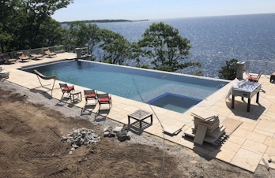
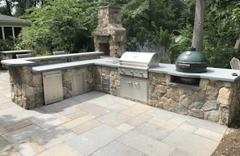
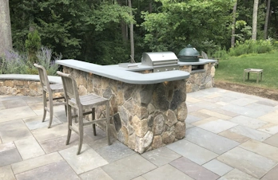

Elevate Your Outdoor Space with Timeless Beauty
Imagine a backyard oasis: a stunning flagstone patio for relaxing, a natural rock waterfall adding tranquility, a custom-tiled deck surrounding a sparkling pool, and a beautiful wood pergola overhead. These are all examples of hardscaping, the non-living elements like stone, pavers, wood, and decks that form the foundation of your outdoor space.
Hardscaping is more than just aesthetics. It provides structure and organization, guiding your experience. The stone pathway weaving through your flower beds defines the space while showcasing the plants. The natural stone steps and pavers leading to your hot tub create a functional and inviting entrance. But thoughtful hardscape design goes beyond looks. We consider water drainage, material durability, and how each element complements the overall space.
We are hardscaping experts. We create seamless integrations between hardscape and softscape (plants), ensuring long-lasting beauty and functionality. Don't wait to experience the joy of a well-designed outdoor space. Let us show you how hardscaping can transform your backyard.
Explore our portfolio and discover the possibilities. We've meticulously documented a variety of projects, showcasing our versatility and commitment to exceptional craftsmanship.
Countryside Living Project
Wellesley, MAThis private residence in Norfolk County, Massachusetts was the location of a backyard oasis. Our latest project, in the Greater Boston area, combines stunning hardscape elements to create an inviting outdoor retreat. A welcoming entrance featuring a curved stone wall that sets the stage for your home's unique style. Winding bluestone walkways elegantly lead you past the sparkling inground pool, while a custom outdoor kitchen beckons you to host unforgettable gatherings. Unwind by the warmth of a wood burning fireplace on the expansive patio, surrounded by lush greenery bursting from raised stone plant beds. This is the art of outdoor living, brought to life.
Duelling Fire Pits Project
Concord, MAElevate your backyard into a luxurious escape with our latest masonry and hardscape masterpiece. Imagine gathering around a custom-built rectangular gas fire pit, its warm glow dancing across the natural stone walls where flickering gas torches add an extra touch of ambiance. String lights overhead twinkle as you relax under the shade of a grand pergola. This beauty boasts both the comfort of radiant heat and the cooling breeze of ceiling fans, while its retractable roof allows you to bask in the sun or find shelter from the stars. Need a change of pace? Head to the separate wood-burning firepit for a more rustic experience. Craving culinary adventures? Our outdoor kitchen is a haven for the grill master, featuring a top-of-the-line Napoleon gas grill and the coveted Ooni Karu pizza oven. This isn't just an outdoor space... it's an extension of your living area, perfectly crafted for unforgettable moments. Discover more about our hardscaping services in Concord, MA!


Water View Project
Gloucester, MA
Twisted Carrots Project
Holliston, MA
The Living Room Project
Concord, MA
The Sous Chef Project
Concord, MA

Additional Photos of our Work
Here are some images of other projects in various cities across the New England area.
- Groton, MassStone veneer with blue stone cap and tile.
- Groton, MassStone veneer with blue stone cap and tile.
- Groton, MassStone accent walls can add a rustic, elegant, or modern touch to the overall design.
- Groton, MassStone veneer with blue stone cap and tile.
- Groton, MassStone veneer with blue stone cap and tile.
 Groton, MassStone veneer with blue stone cap and tile.
Groton, MassStone veneer with blue stone cap and tile.- Follow UsMore projects can be seen on Instagram.
Let's Build Something Extraordinary
Are you ready to transform your outdoor space into a haven of relaxation and entertainment? Contact us today for a free consultation. We'll discuss your vision, answer your questions, and provide a personalized quote to bring your dream outdoor space to life. We look forward to crafting a masterpiece for you!